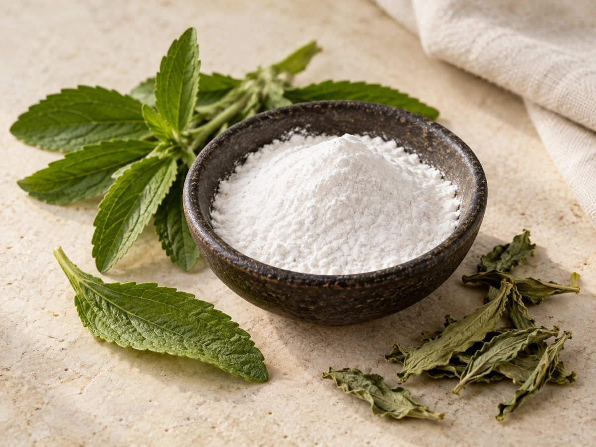

For companies selling through Edeka, Rewe, Aldi and similar European retail channels.
Raw ingredient sourcing on success fee
We find raw ingredient suppliers for European food companies.
FBridge helps European food and beverage companies source cocoa, coffee, tea, stevia and other raw ingredients from Latin America and Africa. We compare quality, price, documents and sample terms, then charge a success fee only when you move forward with a supplier we found.

Your team chooses the supplier. We do the search, checks and comparison work before that decision.
The success fee is agreed before the search starts and tied to a supplier result.
Popular ingredient categories in Europe
Start with the ingredient. We find the right supply route.
Latin America and Africa are where we do most of our searching. Some ingredients have a natural home elsewhere. For matcha, for example, we go to the origin that best fits the product and the paperwork you need.

01 / Cocoa
Cocoa powder
Natural or alkalised, matched by fat level, colour, application and certification needs.

02 / Cocoa
Cacao nibs
Origin, roast profile, particle size and microbiological requirements checked from the start.

03 / Coffee
Green coffee
Arabica or Robusta, screened by grade, cup profile, process, crop and required documents.

04 / Tea
Black tea
Leaf grade, cut, blend, extraction performance and residue documentation compared side by side.

05 / Tea
Matcha
Culinary and premium grades sourced from the origins that make sense for the final product.

06 / Sweetener
Stevia extract
Food-grade steviol glycosides compared by purity, specification and regulatory documents.
Looking for something else? We also search for fruit inputs, spices, nuts, botanicals and extracts.
For European food companies
The supplier has to work for retail, not just look good on paper.
If you sell into German retail, a raw ingredient has to work for Edeka, Rewe, Aldi and similar buyer requirements: quality, price, certificates, MOQ, samples and timing. We narrow the request before anyone wastes time on weak supplier options.
What exactly do you need?
Cocoa, coffee, tea, stevia or another raw ingredient, with origin, grade, format and volume.
Which option is worth a serious look?
We compare price against quality, availability, documents, MOQ and sample terms.
Can the supplier pass the first screen?
Certificates, export experience, responsiveness, packaging, lead time and quote context.
Supplier checks
We take the supplier search off your team.
Your team should not have to chase exporters, translate half-complete offers, and guess whether the supplier can actually deliver. FBridge does the first search and turns it into a short list you can compare.
Who can supply this ingredient?
We look for producers and exporters that match your format, volume and market.
Is the offer competitive enough?
We compare price against quality, availability, MOQ, samples, documents and export terms.
Can you make a decision?
You get the short list with quote context, sample status, risks and the questions still open.
Ingredients and regions
Start with the ingredient category you need.
The first pass is narrow on purpose. Cocoa from one set of origins is a different search from stevia, tea or fruit inputs. We keep the request specific so the comparison is useful.
Cocoa, coffee, tea, stevia, fruit inputs, spices, nuts, botanicals and extracts.
We can also look at private-label ingredient needs if the spec and volumes are clear.
Latin America and Africa, with a practical filter for export-ready suppliers.
Starting markets include Mexico, Colombia, Peru, Brazil, Chile, Morocco, Egypt, Kenya, Ghana and South Africa.
Process
How the success-fee search works.
Send the ingredient request.
Ingredient, format, target price, volume, certificates, packaging and timing.
We search and screen suppliers.
We check quality-price fit, export basics, responsiveness, MOQ and sample availability.
You compare real options.
We organize supplier notes, quotes, sample status, risks and open questions.
Success fee only if you move forward.
The fee is tied to a supplier result, not hours spent researching.
Before you choose
You get the supplier facts in one place.
Supplier name, location, production fit and export experience.
Price context, MOQ, sample terms, lead time and packaging details.
Certificates, open questions, visible risks and next steps for your team.
Start a supplier search
Send the requirement, or talk it through first.
Choose whichever is easier for your team. Both routes go directly to the person handling the search.